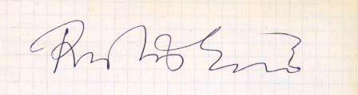

My speed cubing page

This is a copy of Ernö Rubik's signature as it appears in my
notebook. He signed it at the World Championship in Budapest in 1982
This system for advanced cubers and is not appropriate for a beginner. It is intended for those of you who can already solve the cube in a few minutes and want
to get really fast. If you are a complete beginner, please, visit
Jasmine's Beginner Solution.
 My system for solving Rubik's cube
My system for solving Rubik's cube
-
Unique features
-
The first two layers (additional useful hints and
examples of how I solve the first two layers)
-
The last layer
-
20 years of speed cubing (a short historical narrative)
-
Watch me solving the cube
-
Hints for speed cubing
-
Customizing algorithms
-
Multiple algorithms
-
Finger shortcuts
-
Move algorithms to your subconsciousness
-
No delays between algorithms
-
Faster twisting does not have to mean shorter times
-
Preparing the cube for record times
-
Hard work
-
What are the limits of speed cubing?
-
Collections of various algorithms (by Mirek Goljan, mgoljan (AT) binghamton. edu)
-
Swapping two edges and two corners
-
Swaping two and two edges
-
Twisting and moving corners and edges in one layer
(by Mirek Goljan, mgoljan (AT) binghamton. edu)
-
Pretty patterns by Mirek Goljan, mgoljan (AT) binghamton. edu
-
Richard Carr is THE expert on solving large cubes with a list of his record times.
Richard can solve the cube blindfolded and willingly shares with us his method. I met Richard in April 2003 and he showed me
his incredible skills in person.
-
Guus Razoux Schultz on speed cubing
-
The World Championship, Budapest 1982
-
Hana Bizek's cube art
-
Dutch Cube Day, October 6, 2002
-
San Francisco Cubing, January 19, 2003
-
The 2nd World Championship in Rubik's Cube in Toronto, August 23-24, 2003
-
Press&Sun Bulletin, Binghamton Sep 11, 2003
-
Cube links